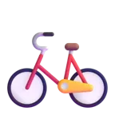

My English World
Book 5 · Think & Say
Unit 21
A Rainy Day
Tap any picture or sentence to listen.
🔍 Look and think
Q
Where are Sara and Leo?
A
They're at home.
Q
Why are they at home?
A
Because it's raining.
Q
What can they see from the window?
A
The rain.
Q
Is there a sofa?
A
Yes, there is.
Q
What can they do?
A
They can play a game.
Q
Are they bored?
A
No, they aren't!
▶ Play all
🗣️ Talk about the picture
It's raining today.
🔊
Sara and Leo are at home.
🔊
They can't go to the park.
🔊
They sit on the sofa.
🔊
They play a board game.
🔊
Rainy days can be fun!
🔊
▶ Play all sentences
🧩 Sentence patterns
We can't ___ because it's raining.
We can't play football because it's raining.
🔊
We can't go to the park because it's raining.
🔊

We can't ride our bikes because it's raining.
🔊
We can't go to the beach because it's raining.
🔊
▶ Play pattern 1
Let's ___ instead.
Let's do a puzzle instead.
🔊
Let's play a board game instead.
🔊
Let's bake cookies instead.
🔊
Let's draw instead.
🔊
▶ Play pattern 2
‹ Yesterday at the Park
All units
A Picnic ›